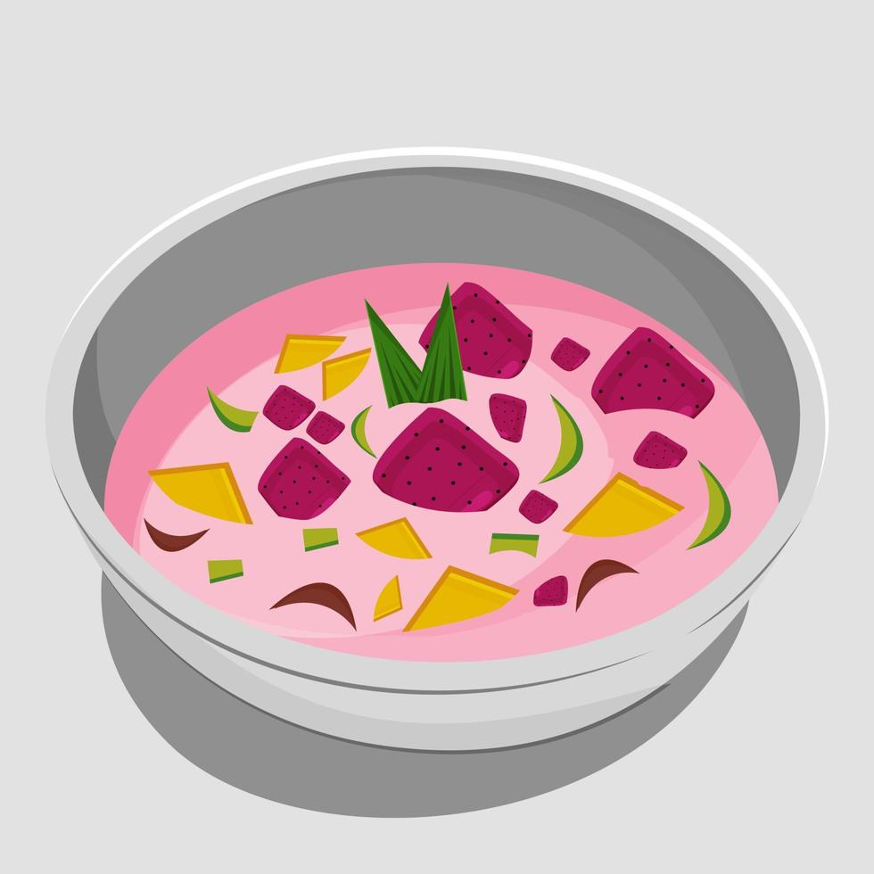
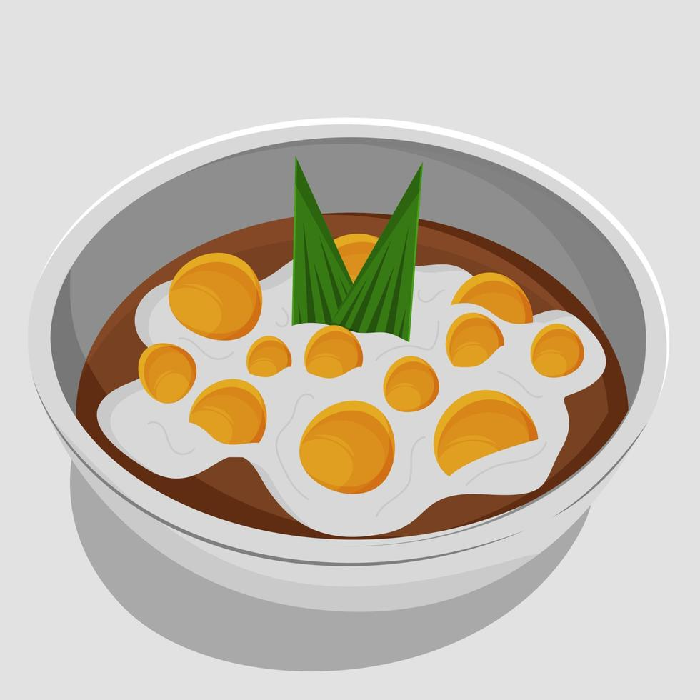
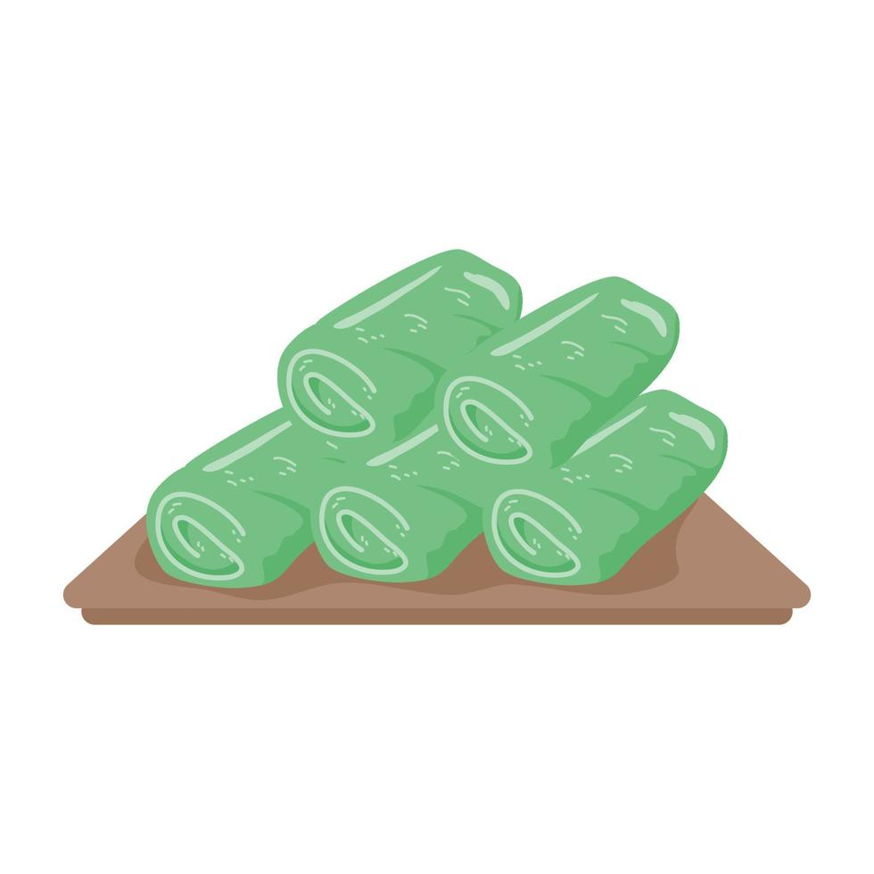
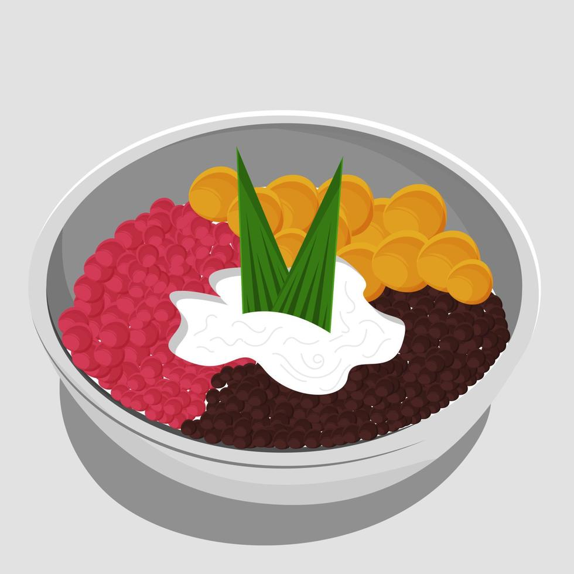
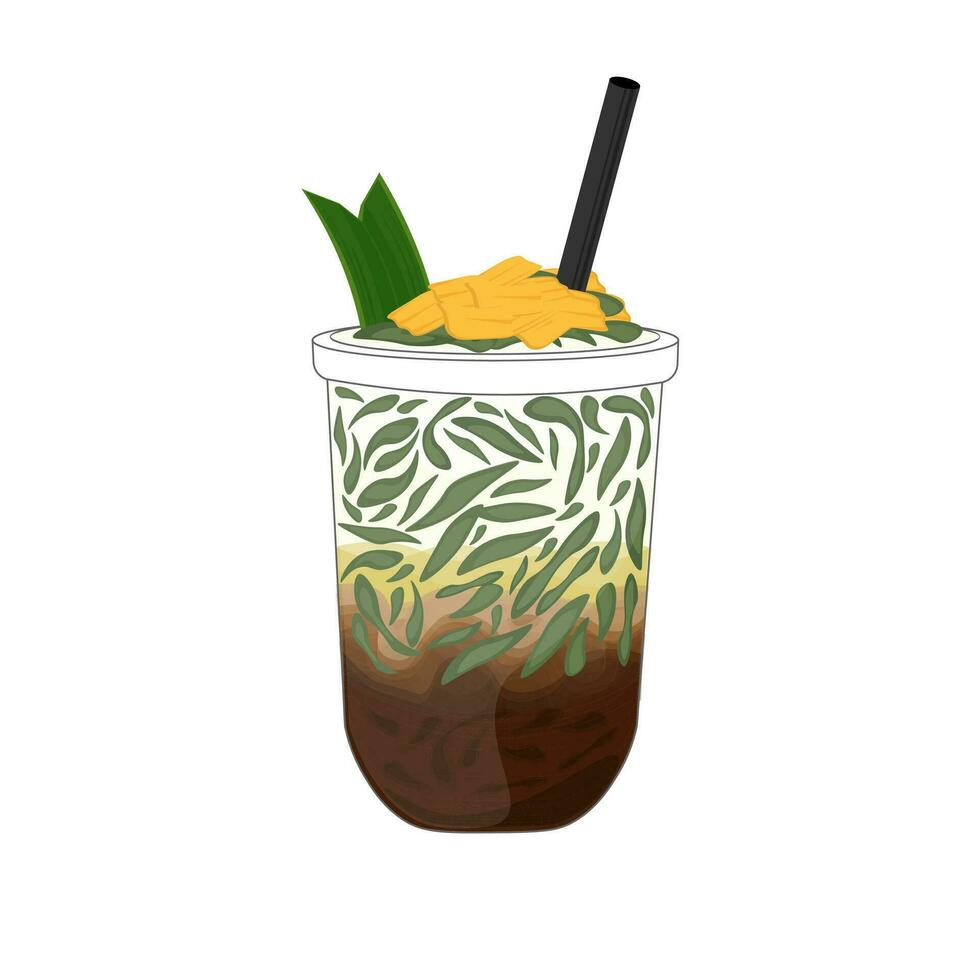
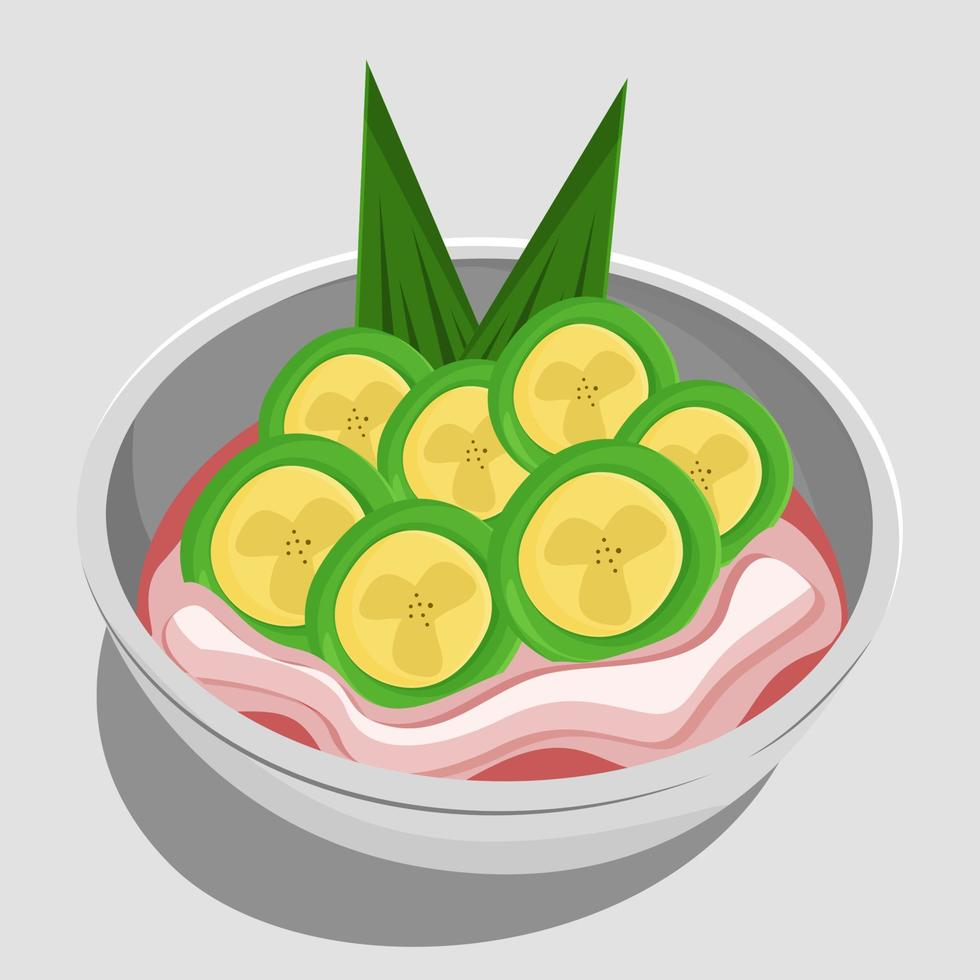
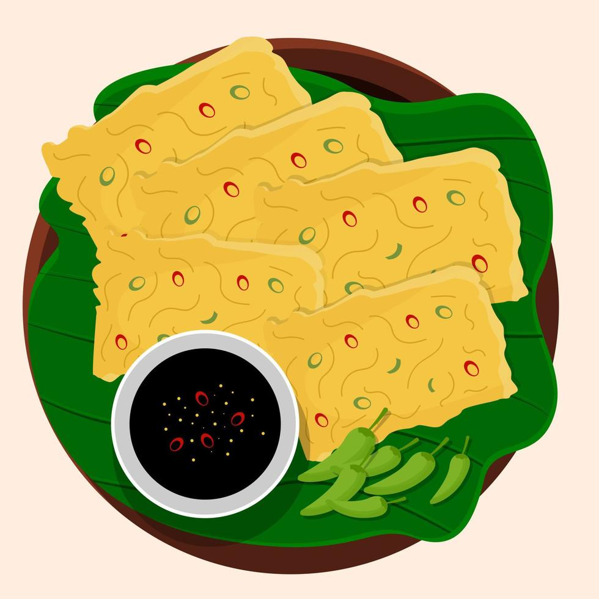

Menu Pembuka
Takjil
Kolak Pisang

Kolak pisang adalah makanan yang terbuat dari pisang yang dimasak dengan santan, gula merah, dan daun pandan. Kolak pisang biasanya disajikan sebagai takjil saat berbuka puasa.
Lihat resepEs Buah
Es buah adalah minuman yang terbuat dari campuran buah-buahan segar yang dicampur dengan sirup, susu, dan es serut. Es buah biasanya disajikan sebagai takjil saat berbuka puasa.
Lihat resepBubur Candil
Bubur candil adalah makanan yang terbuat dari tepung ketan yang dibentuk bulat dan dimasak dengan santan dan gula merah. Bubur candil biasanya disajikan sebagai takjil saat berbuka puasa.
Lihat resepDadar Gulung
Dadar gulung adalah makanan yang terbuat dari adonan telur yang digulung dengan isian kelapa parut dan gula merah. Dadar gulung biasanya disajikan sebagai takjil saat berbuka puasa.
Lihat resepEs Campur
Es campur adalah minuman yang terbuat dari campuran buah-buahan segar, agar-agar, dan es serut. Es campur biasanya disajikan sebagai takjil saat berbuka puasa.
Lihat resepEs Dawet
Es dawet adalah minuman yang terbuat dari campuran dawet, santan, gula merah, dan es serut. Es dawet biasanya disajikan sebagai takjil saat berbuka puasa.
Lihat resepEs Pisang Ijo
Es pisang ijo adalah makanan yang terbuat dari pisang yang dibalut dengan adonan tepung dan dimasak dengan santan dan gula merah. Es pisang ijo biasanya disajikan sebagai takjil saat berbuka puasa.
Lihat resepMendoan
Mendoan adalah makanan yang terbuat dari tempe yang digoreng dengan adonan tepung. Mendoan biasanya disajikan sebagai takjil saat berbuka puasa.
Lihat resep